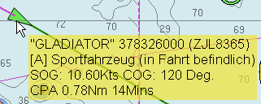
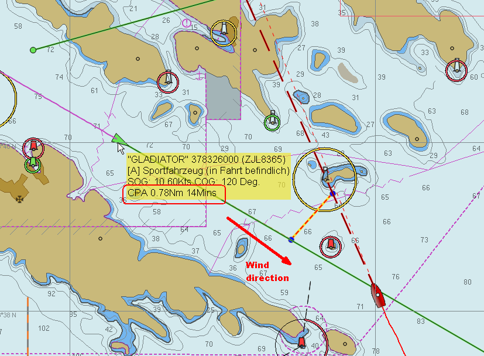
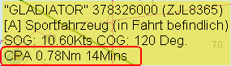
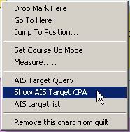
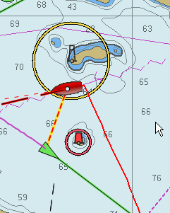
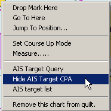
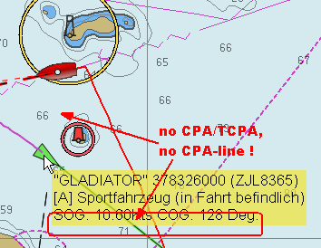
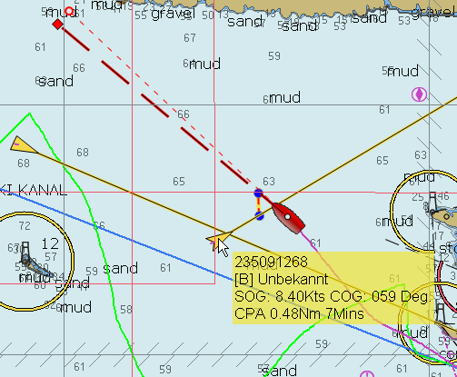
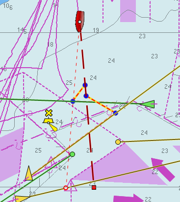

OpenCPN displays warnings about targets CPA & TCPA according to the setup in the AIS tab. But it's also possible to show CPA & TCPA for any target, that is no immediate danger, but where internal CPA calculation is still done, to assist in the decision making.
The AIS rollover window shows the CPA and TCPA of a target :

But it doesn't tell us where we and the target are at CPA, and if the target passes in front of us or behind us (i.e. should we speed up or slow down ?).
See the following (real) example: We are sailing hard on the wind, while a vessel is approaching us, more or less from the wind direction. A CPA of 0.78 miles is normally safe, but there is this island in our way, meaning we had to tack towards the vessel, and it is still 14 minutes to go …

What will happen with our CPA after the tack ? Have we already passed each other or do we get closer when tacking just in front of the island ? The answer to these questions is a context sensitive menu for AIS targets. Move the mouse over the target, and when you see the CPA / TCPA info in the rollover window,

you can right click and select “Show AIS Target CPA”.

The function is only available when we have a “valid CPA”, i.e. when the rollover shows CPA and TCPA (it uses the internal CPA calculation).
It simply shows the “CPA line” which is used in case of a CPA alert :
Showing the CPA-line as in the screen-shot above, makes life much easier. Nothing to worry about …
At CPA … • we will be just in front of the island, exactly at our tacking position and • she'll already be behind us (CPA line points backwards from our CPA position) The CPA line is constantly updated, so you can follow the situation.
This is, what it looked like directly after our tack

To get rid of the CPA line for a specific target, right-click on the target and select “Hide AIS Target CPA”.

As already mentioned, the CPA line is shown only, when there is a valid CPA. A minute later, we don't have a CPA anymore for the target –> the CPA line isn't drawn anymore !.

Another example :

He'll pass behind us, so “full steam ahead !”
Monitoring several targets You can also monitor more than one target in parallel. Simply right-click on a second target and “Show AIS target CPA line” Situation could be : What happens to a second target if I get out of the way of the first one ?
